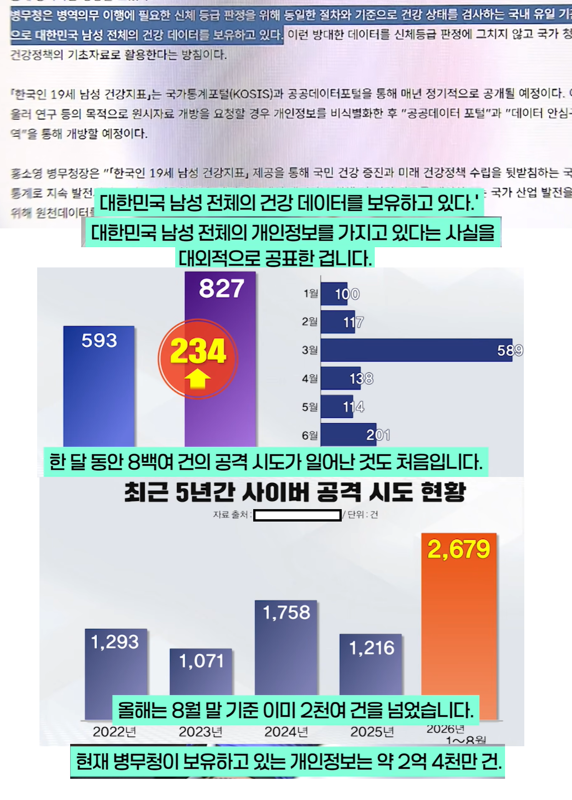

병무청 : 우리 국군 건강정보 개많음 ㅎㅎ 우리가 인증함 ㅋ
아직 까지 뚫린적은 없지만
개붕이들 건강정보 계속 털려고 시도중

병무청 : 우리 국군 건강정보 개많음 ㅎㅎ 우리가 인증함 ㅋ
아직 까지 뚫린적은 없지만
개붕이들 건강정보 계속 털려고 시도중
데이터 넘어가면 이제 표적 장기 매매 하는건가
군적 초기화 후 전국민 재입대
대충 유전자 검사 의무화 해야 한다는 댓글
ㅈㄴ철저하네 시발새끼
저 정보는 털리면 보험사들도 군침 흘릴듯.ㅋㅋㅋ
이미 털렸는데 드러나지 않았을 확률이 더 높다고봄
내 개인정보가 안 털렸을 수 있을까 싶다 ㅋㅋㅋ
???:병역정보가 소실되어 전 남성들은 재입대대상입니다
범죄자 존나 많네
제대로 된 자격도 없는 하급 공무원들도 다 접근 가능한 정보들이면 이미 다 털렸다고 보면 됨
신선한 아쎄이의 개인정보가 가득한 성채가 아닌가! '위치이동'을 실시한다!!
안털린거 맞제? 모르는거 아이제? 잘하자...
국내에서 가장 빠르게 엑티브x같은거 폐기하고 사용자 친화적인 사이트 만들어준 곳이라. 보안도 잘 되어 있을거야.
마지막 한명까지 끌고가려고 전산 시스템조차 사용자 친화적으로 만든 씹새끼
안뚫렸겠냐고
병무청은 내부망 분리 잘 해두어서
원천적으로 해킹하려면 물리적 수단밖에 없다던데
고무호스 기법 ㅋㅋㅋㅋ
싱싱한 인체신비전행
??? : 이 나라 청년들은 한명도 빠짐없이 건강한데?
?? 전역한 기록을 말소하겠다
법으로 어떤 개인정보 들고 있는지 공개하라고 되어있으니까 ㅋㅋ
해커는 전세계급 프로고 저런데 유지관리하는 업체는 동네 구멍가게인데 해커입장에서는 쇼핑몰이 아닐지 ㅋㅋ
인구반이상의 개인정보를 담고있긴하네